Герметизация деревянного дома
Аккуратная герметизация межвенцовых швов и примыканий помогает уменьшить продувание и защитить уязвимые участки от попадания влаги. Цвет шва подбирается с учётом оттенка древесины и желаемого визуального результата.
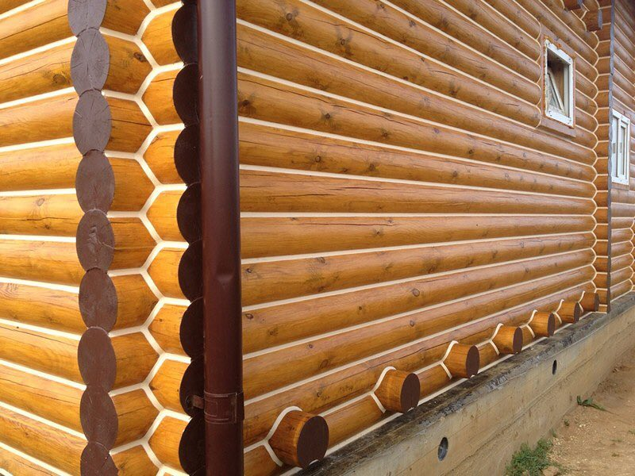
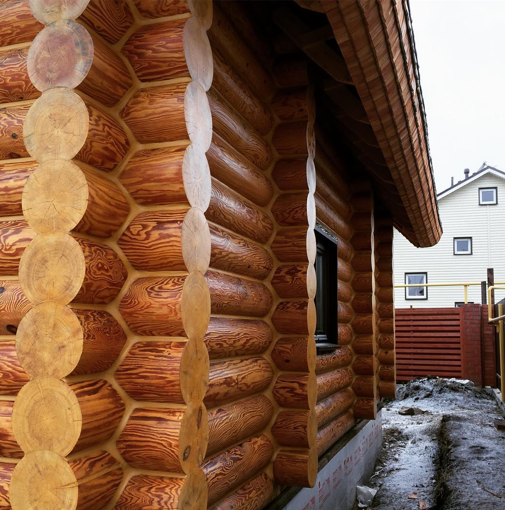
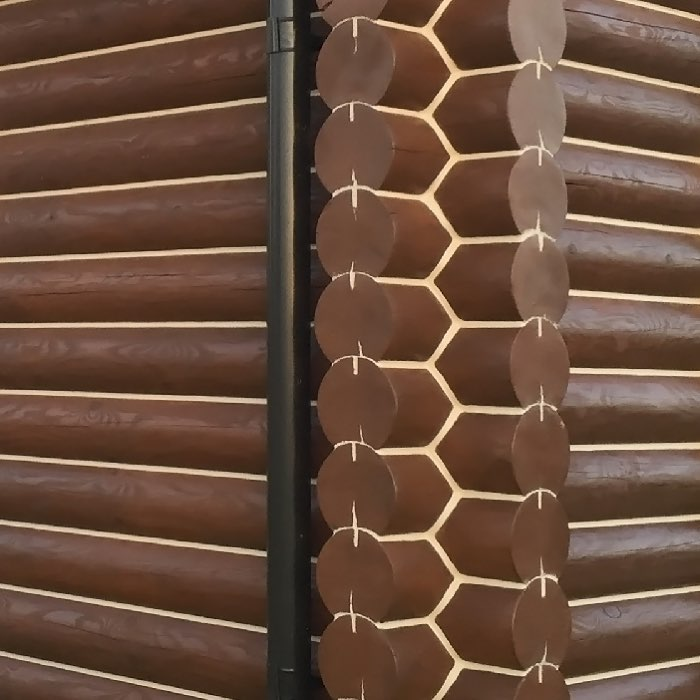
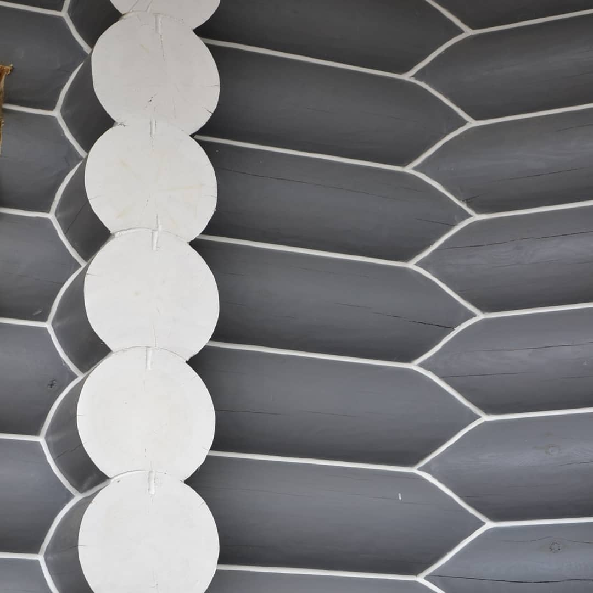
Шлифовка древесины
Подготовка деревянных поверхностей к нанесению защитных и декоративных покрытий. Объём и технология работ зависят от состояния древесины.
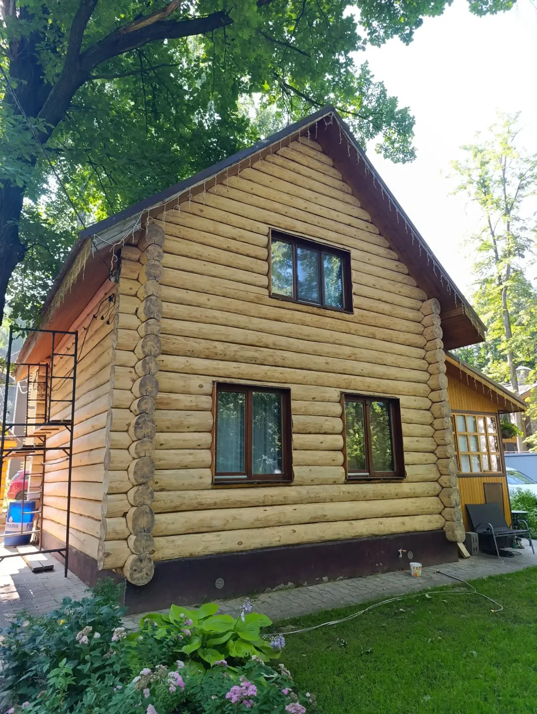
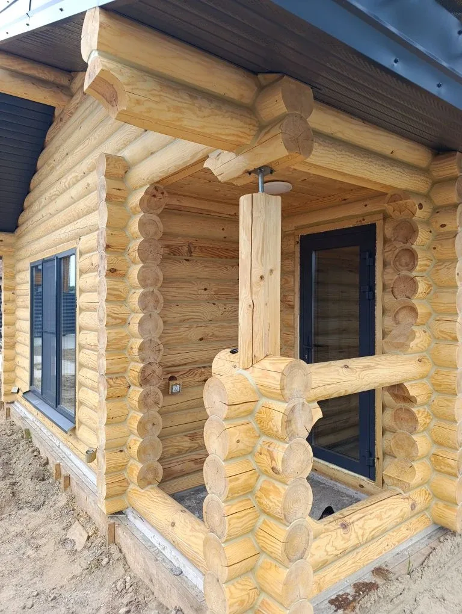
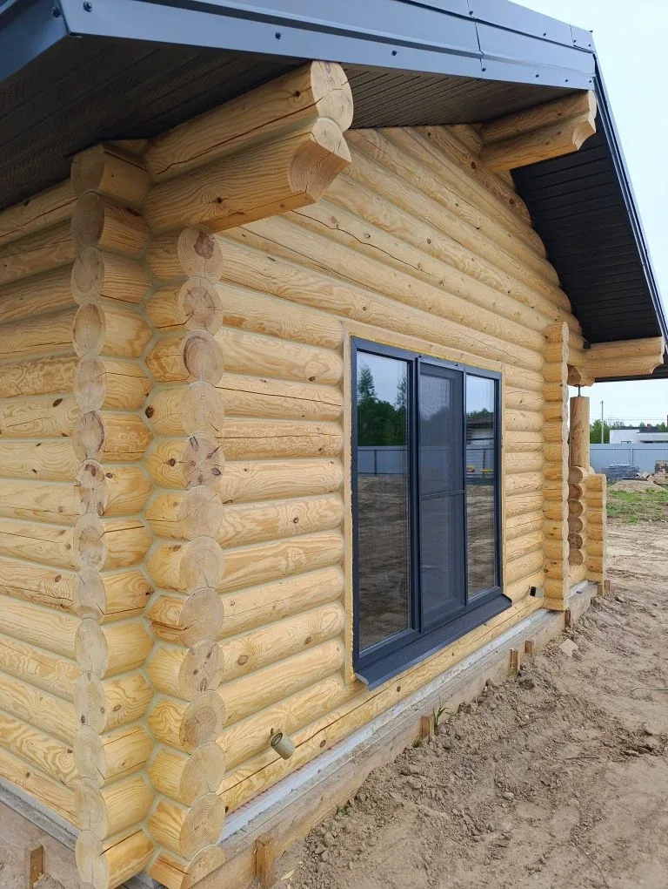
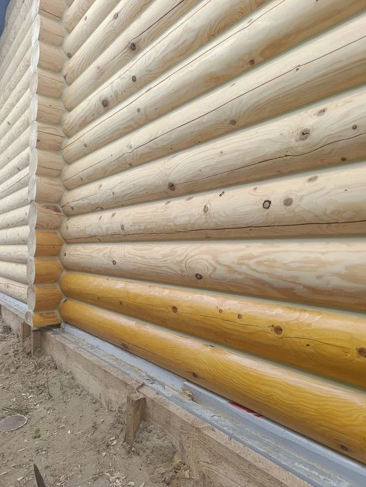
На фотографиях — древесина после шлифовки, до нанесения финишного защитного покрытия.
Обсудить шлифовку →Много цветов. Много идей. Ваш дом — ваш стиль.
От светлых натуральных оттенков до глубоких древесных тонов и смелых цветовых решений. Покрытие помогает подчеркнуть архитектуру дома, сохранить выразительную фактуру дерева и создать индивидуальный облик фасада.
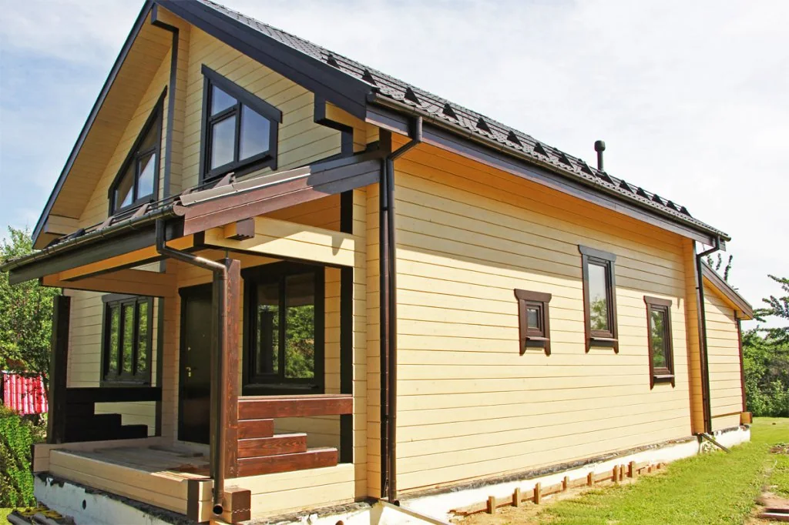
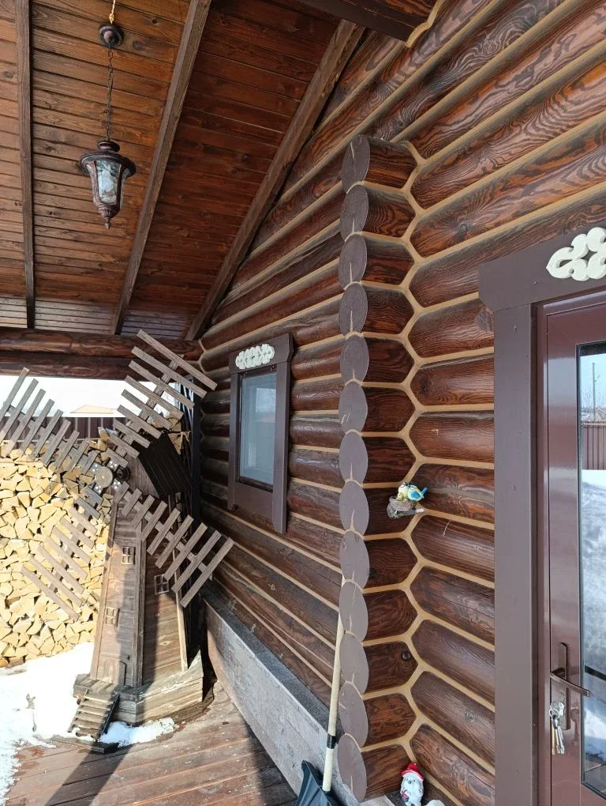
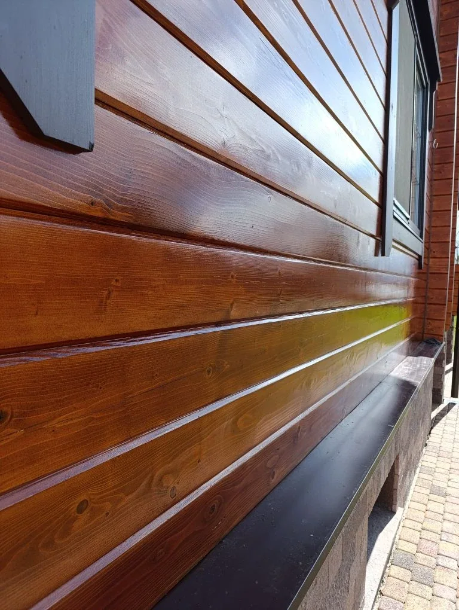
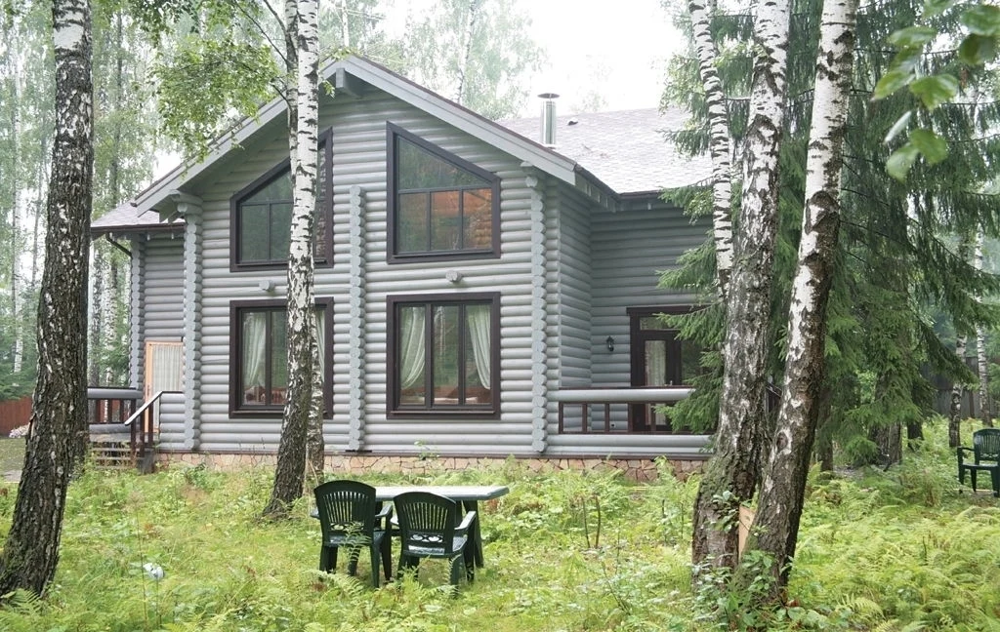
Фотографии показывают разные варианты декоративной отделки. Оттенок на экране может отличаться от реального.
Обсудить обработку →Обсудим ваш объект
Расскажите, какие работы нужны, где находится объект и каково состояние древесины. Уточним возможность выполнения работ и предварительные условия.
8 (900) 325-60-90 · 8 (903) 689-41-28
Стоимость и сроки определяются после уточнения задачи и объёма работ.